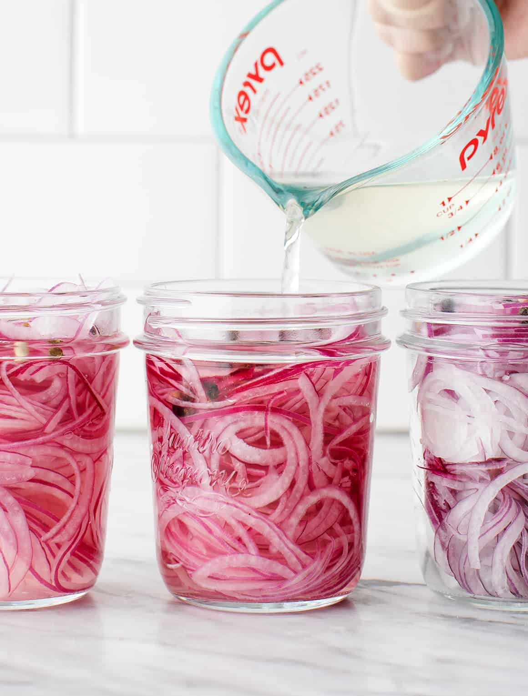

Pickled Red Onions

Sweet & Tangy Pickled Red Onions
Pickled red onions add a crispy, sweet, and tangy pop to sandwiches, burgers, tacos, salads, and so much more! These will last around 3 weeks in the fridge once you make them, but once you experience what these add to any number of dishes, you'll go through them in no time!
Equipment
- 10 oz. Mason Jars
- Mandoline
- Medium Pot
Ingredients
- 2 small red onions
- 2 cups white vinegar
- 2 cups water
- 1/3 cup cane sugar
Optional
- 2 garlic cloves
- 1 teaspoon mixed peppercorns
Steps
- Thinly slice the onions (it's helpful to use a mandoline), and divide the onions between 2 (16-ounce) jars or 3 (10-ounce) jars. Place the garlic and peppercorns in each jar, if using
- Heat the vinegar, water, sugar, and salt in a medium saucepan over medium heat. Stir until the sugar and salt dissolve, about 1 minute. Let cool and pour over the onions. Set aside to cool to room temperature, then store the onions in the fridge.
- Your pickled onions will be ready to eat once they're bright pink and tender - about 1 hour for very thinly sliced onions, or overnight for thicker sliced onions. They will keep in the fridge for up to 2 weeks.